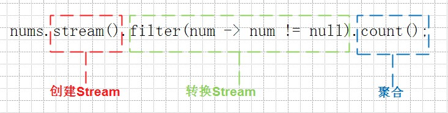
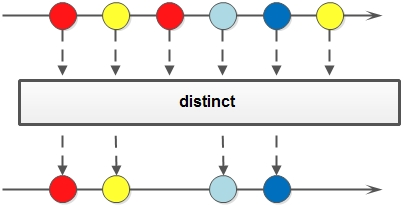
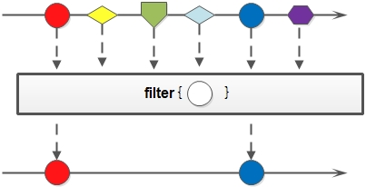
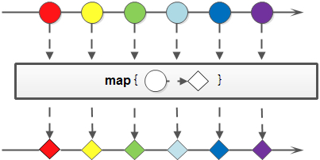
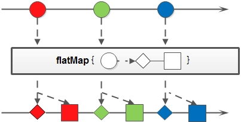
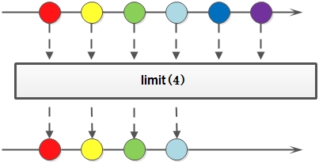
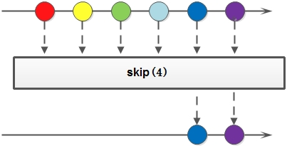
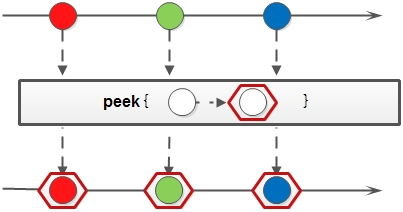

<!DOCTYPE html>
<html>
<head><meta name="generator" content="Hexo 3.9.0">
  <meta charset="utf-8">
  
  <meta http-equiv="X-UA-Compatible" content="IE=edge">
  <title>Lambda and Stream 笔记 | 公孙二狗</title>
  <meta name="viewport" content="width=device-width, initial-scale=1, maximum-scale=1">
  <meta name="description" content="创建 Stream: 1234Stream&amp;lt;String&amp;gt;  stringStream1  = list.stream();Stream&amp;lt;String&amp;gt;  stringStream2  = Stream.of(&quot;taobao&quot;);Stream&amp;lt;Integer&amp;gt; integerStream1 = Stream.of(1, 2, 3, 5);Stream&amp;lt;I">
<meta name="keywords" content="Java">
<meta property="og:type" content="article">
<meta property="og:title" content="Lambda and Stream 笔记">
<meta property="og:url" content="http://xtuer.github.io/lambda-stream/index.html">
<meta property="og:site_name" content="公孙二狗">
<meta property="og:description" content="创建 Stream: 1234Stream&amp;lt;String&amp;gt;  stringStream1  = list.stream();Stream&amp;lt;String&amp;gt;  stringStream2  = Stream.of(&quot;taobao&quot;);Stream&amp;lt;Integer&amp;gt; integerStream1 = Stream.of(1, 2, 3, 5);Stream&amp;lt;I">
<meta property="og:locale" content="default">
<meta property="og:image" content="http://xtuer.github.io/img/java/stream.jpg">
<meta property="og:image" content="http://xtuer.github.io/img/java/stream-distinct.jpg">
<meta property="og:image" content="http://xtuer.github.io/img/java/stream-filter.jpg">
<meta property="og:image" content="http://xtuer.github.io/img/java/stream-map.jpg">
<meta property="og:image" content="http://xtuer.github.io/img/java/stream-flatmap.jpg">
<meta property="og:image" content="http://xtuer.github.io/img/java/stream-limit.jpg">
<meta property="og:image" content="http://xtuer.github.io/img/java/stream-skip.jpg">
<meta property="og:image" content="http://xtuer.github.io/img/java/stream-peek.jpg">
<meta property="og:updated_time" content="2020-07-07T14:16:50.373Z">
<meta name="twitter:card" content="summary">
<meta name="twitter:title" content="Lambda and Stream 笔记">
<meta name="twitter:description" content="创建 Stream: 1234Stream&amp;lt;String&amp;gt;  stringStream1  = list.stream();Stream&amp;lt;String&amp;gt;  stringStream2  = Stream.of(&quot;taobao&quot;);Stream&amp;lt;Integer&amp;gt; integerStream1 = Stream.of(1, 2, 3, 5);Stream&amp;lt;I">
<meta name="twitter:image" content="http://xtuer.github.io/img/java/stream.jpg">
  
    <link rel="alternative" href="/atom.xml" title="公孙二狗" type="application/atom+xml">
  
  
    <link rel="icon" href="/img/dog.png">
  
  <link rel="stylesheet" href="/css/style.css">

  <!-- <link href="//cdn.bootcss.com/font-awesome/4.7.0/css/font-awesome.min.css" rel="stylesheet"> -->
  <!-- <script src="//cdn.bootcss.com/jquery/3.2.1/jquery.min.js"></script> -->
  <!-- <script src="//cdn.bootcss.com/require.js/2.3.6/require.min.js"></script> -->
  <link href="/css/fonts/font-awesome.min.css" rel="stylesheet">
  <script src="/js/jquery.min.js"></script>
  <script src="/js/require.min.js"></script>
  <script src="/js/main.js"></script>

  <!-- <script async src="//busuanzi.ibruce.info/busuanzi/2.3/busuanzi.pure.mini.js"></script> -->
  <!-- <script src="https://hm.baidu.com/hm.js?22778d8041aa1437b11529a3e87a0a12"></script> -->
</head>
</html>

<body>
    <div id="container">
        <div class="left-col">
            <div class="content-table">Content Table</div>
            <div class="overlay"></div>

<ul class="menu">
    <!-- <li class="item"><a href="javascript:void(0)" id="baidu-search-button">百度搜索</a></li> -->
    <!-- <li class="item"><a href="javascript:void(0)" id="google-search-button">谷歌搜索</a></li> -->
    <!-- <li class="item non-index-item"><a href="javascript:void(0)" id="show-toc-button">显示目录</a></li> -->
</ul>
<div class="intrude-less">
	<header id="header" class="inner">
		<a href="/" class="profilepic">
			
			
			
		</a>

		<hgroup>
		  <h1 class="header-author"><a href="/all/">公孙二狗</a></h1>
		</hgroup>
		<p style=" margin-bottom: 10px;margin-top: -5px;">
			<a style="color: gray;" href="http://wpa.qq.com/msgrd?v=3&uin=26664141&site=qq&menu=yes">QQ: 26664141</a>
		</p>

		
		<p class="header-subtitle">大圣，此去欲何？踏南天，碎凌霄。若一去不回……？便一去不回！</p>
		
		
			<div class="switch-btn">
				<div class="icon">
					<div class="icon-ctn">
						<div class="icon-wrap icon-ribbon" data-idx="1">
							<div class="ribbon"></div>
						</div>
						<div class="icon-wrap icon-house hide" data-idx="0">
							<div class="birdhouse"></div>
							<div class="birdhouse_holes"></div>
						</div>
						
						<div class="icon-wrap icon-link hide" data-idx="2">
							<div class="loopback_l"></div>
							<div class="loopback_r"></div>
						</div>
						
						
						<div class="icon-wrap icon-me hide" data-idx="3">
							<div class="user"></div>
							<div class="shoulder"></div>
						</div>
						
					</div>

				</div>
				<div class="tips-box hide">
					<div class="tips-arrow"></div>
					<ul class="tips-inner">
						<li>Tags</li>
						<li>Menu</li>
						
						<li>Links</li>
						
						
						<li>About</li>
						
					</ul>
				</div>
			</div>
		

		<div class="switch-area">
			<div class="switch-wrap">
				
				<section class="switch-part switch-part1">
					<div class="widget tagcloud" id="js-tagcloud">
						<a href="/tags/Ajax/" style="font-size: 10px;">Ajax</a> <a href="/tags/Cas/" style="font-size: 11.88px;">Cas</a> <a href="/tags/DB/" style="font-size: 15px;">DB</a> <a href="/tags/FE/" style="font-size: 20px;">FE</a> <a href="/tags/Gradle/" style="font-size: 13.75px;">Gradle</a> <a href="/tags/Hexo/" style="font-size: 11.88px;">Hexo</a> <a href="/tags/Index/" style="font-size: 13.13px;">Index</a> <a href="/tags/Java/" style="font-size: 19.38px;">Java</a> <a href="/tags/Mac/" style="font-size: 16.88px;">Mac</a> <a href="/tags/Misc/" style="font-size: 16.88px;">Misc</a> <a href="/tags/PHP/" style="font-size: 10.63px;">PHP</a> <a href="/tags/Qt/" style="font-size: 18.13px;">Qt</a> <a href="/tags/QtBook/" style="font-size: 18.75px;">QtBook</a> <a href="/tags/Redis/" style="font-size: 10.63px;">Redis</a> <a href="/tags/SemanticUi/" style="font-size: 13.75px;">SemanticUi</a> <a href="/tags/Spring/" style="font-size: 11.25px;">Spring</a> <a href="/tags/SpringBoot/" style="font-size: 12.5px;">SpringBoot</a> <a href="/tags/SpringCore/" style="font-size: 15.63px;">SpringCore</a> <a href="/tags/SpringMVC/" style="font-size: 14.38px;">SpringMVC</a> <a href="/tags/SpringSecurity/" style="font-size: 15px;">SpringSecurity</a> <a href="/tags/SpringWeb/" style="font-size: 17.5px;">SpringWeb</a> <a href="/tags/Util/" style="font-size: 17.5px;">Util</a> <a href="/tags/Vue/" style="font-size: 16.25px;">Vue</a> <a href="/tags/zTree/" style="font-size: 11.25px;">zTree</a>
                    </div>
                    <script>

                    </script>
				</section>
				

				<section class="switch-part switch-part2">
					<nav class="header-menu">
						<ul>
						
							<li><a href="/">主页</a></li>
				        
							<li><a href="/archives">所有文章</a></li>
				        
						</ul>
					</nav>
					<nav class="header-nav">
						<div class="social">
							
						</div>
					</nav>
				</section>

				
				<section class="switch-part switch-part3">
					<div id="js-friends">
					
			          <a target="_blank" class="main-nav-link switch-friends-link" href="https://loadship.cn">小鱼人</a>
			        
			          <a target="_blank" class="main-nav-link switch-friends-link" href="http://qtnull.com/">千古</a>
			        
			        </div>
				</section>
				

				
				
				<section class="switch-part switch-part4">
				
					<div id="js-aboutme">吞风吻雨葬落日未曾彷徨，欺山赶海践雪径也未绝望，拈花把酒偏折煞世人情狂，凭这两眼与百臂或千手不能防，天阔阔雪漫漫共谁同航，这沙滚滚水皱皱笑着浪荡，贪欢一晌偏教那女儿情长埋葬。</div>
				</section>
				
			</div>
		</div>
        <div class="links-area" style="margin-top: 10px;">
            <a href="/html/tools">收藏夹 |</a>
            <a href="/qtbook">Qt 杂谈 |</a>
            <a href="/html/vue-in-action">Vue 实践</a>
            <a href="/html/spring-boot">Spring Boot |</a>
            <a href="/spring-web-index">Java Web 开发</a>
        </div>
	</header>
</div>

<script>
    $(document).ready(function() {
        // Baidu 搜索
        // $('#baidu-search-button').click(function(event) {
        //     layer.prompt({title: false, formType: 0, closeBtn: 0, maxlength: 140}, function(text, index) {
        //         layer.close(index);
        //         window.open('https://www.baidu.com/s?wd=site:qtdebug.com+'+text);
        //     });
        // });
        //
        // // Google 搜索
        // $('#google-search-button').click(function(event) {
        //     layer.prompt({title: false, formType: 0, closeBtn: 0, maxlength: 140}, function(text, index) {
        //         layer.close(index);
        //         window.open('https://www.google.com/?#q=site:qtdebug.com+'+text);
        //     });
        // });
    });

    function resetTags() {
		var tags = $(".tagcloud a");
		tags.css({"font-size": "12px"});
		for(var i=0,len=tags.length; i<len; i++){
			var num = tags.eq(i).html().length % 5 +1;
			tags[i].className = "";
			tags.eq(i).addClass("color"+num);
		}
    }

    resetTags();
</script>

        </div>
        <div class="mid-col">
            <nav id="mobile-nav">
  	<div class="overlay">
  		<div class="slider-trigger"></div>
  		<h1 class="header-author js-mobile-header hide">公孙二狗</h1>
  	</div>
	<div class="intrude-less">
		<header id="header" class="inner">
			<div class="profilepic">
			
				
			
			</div>
			<hgroup>
			  <h1 class="header-author">公孙二狗</h1>
			</hgroup>
			
			<p class="header-subtitle">大圣，此去欲何？踏南天，碎凌霄。若一去不回……？便一去不回！</p>
			
			<nav class="header-menu">
				<ul>
				
					<li><a href="/">主页</a></li>
		        
					<li><a href="/archives">所有文章</a></li>
		        
		        <div class="clearfix"></div>
				</ul>
			</nav>
			<nav class="header-nav">
				<div class="social">
					
				</div>
			</nav>
		</header>				
	</div>
</nav>

            <div class="body-wrap"><!-- 生成目录 -->

    <div id="toc-mask" style="display: none;">
        <div class="toc-container">
            <div class="article-toc">
                <ol class="toc"><li class="toc-item toc-level-2"><a class="toc-link" href="#distict"><span class="toc-text">distict</span></a></li><li class="toc-item toc-level-2"><a class="toc-link" href="#filter"><span class="toc-text">filter</span></a></li><li class="toc-item toc-level-2"><a class="toc-link" href="#map"><span class="toc-text">map</span></a></li><li class="toc-item toc-level-2"><a class="toc-link" href="#flatMap"><span class="toc-text">flatMap</span></a></li><li class="toc-item toc-level-2"><a class="toc-link" href="#limit"><span class="toc-text">limit</span></a></li><li class="toc-item toc-level-2"><a class="toc-link" href="#skip"><span class="toc-text">skip</span></a></li><li class="toc-item toc-level-2"><a class="toc-link" href="#peek"><span class="toc-text">peek</span></a></li><li class="toc-item toc-level-2"><a class="toc-link" href="#reduce"><span class="toc-text">reduce</span></a></li><li class="toc-item toc-level-2"><a class="toc-link" href="#常见示例"><span class="toc-text">常见示例</span></a></li><li class="toc-item toc-level-2"><a class="toc-link" href="#anyMatch"><span class="toc-text">anyMatch</span></a></li><li class="toc-item toc-level-2"><a class="toc-link" href="#频率统计"><span class="toc-text">频率统计</span></a></li><li class="toc-item toc-level-2"><a class="toc-link" href="#统计单词次数"><span class="toc-text">统计单词次数</span></a></li><li class="toc-item toc-level-2"><a class="toc-link" href="#分组-只取某个属性"><span class="toc-text">分组 (只取某个属性)</span></a></li></ol>
            </div>
        </div>
    </div>


<article id="post-lambda-stream" class="article article-type-post" itemscope itemprop="blogPost">
    <!-- 
        <div class="content-table">Content Table</div>
     -->

    
        <div class="article-meta">
            <a href="/lambda-stream/" class="article-date">
  	<!-- <time datetime="2020-05-24T01:08:08.000Z" itemprop="datePublished">2020-05-24</time> -->
    2020-05-24
</a>

        </div>
    

    
        <div class="article-inner article-inner-x">
    
    
    
      <header class="article-header">
        
  
    <h1 class="article-title" itemprop="name">
      Lambda and Stream 笔记
    </h1>
  

      </header>
      
      <div class="article-info article-info-post">
        
	<div class="article-tag tagcloud">
		<ul class="article-tag-list"><li class="article-tag-list-item"><a class="article-tag-list-link" href="/tags/Java/">Java</a></li></ul>
	</div>


        

        <div class="clearfix"></div>
      </div>
      
    
    <div class="article-entry" itemprop="articleBody">
        
            <p></p>
<p>创建 Stream:</p>
<figure class="highlight java"><table><tr><td class="gutter"><pre><span class="line">1</span><br><span class="line">2</span><br><span class="line">3</span><br><span class="line">4</span><br></pre></td><td class="code"><pre><span class="line">Stream&lt;String&gt;  stringStream1  = list.stream();</span><br><span class="line">Stream&lt;String&gt;  stringStream2  = Stream.of(<span class="string">"taobao"</span>);</span><br><span class="line">Stream&lt;Integer&gt; integerStream1 = Stream.of(<span class="number">1</span>, <span class="number">2</span>, <span class="number">3</span>, <span class="number">5</span>);</span><br><span class="line">Stream&lt;Integer&gt; integerStream1 = Stream.iterate(<span class="number">1</span>, item -&gt; item + <span class="number">1</span>).limit(<span class="number">10</span>);</span><br></pre></td></tr></table></figure>
<a id="more"></a>
<h2 id="distict"><a href="#distict" class="headerlink" title="distict"></a>distict</h2><p>对于 Stream 中包含的元素进行去重操作 (去重逻辑依赖元素的 equals 方法)，新生成的 Stream 中<code>没有重复的元素</code>:</p>
<p></p>
<h2 id="filter"><a href="#filter" class="headerlink" title="filter"></a>filter</h2><p>对于 Stream 中包含的元素使用给定的过滤函数进行过滤操作，新生成的 Stream 只包含<code>符合条件的元素</code>:</p>
<p></p>
<h2 id="map"><a href="#map" class="headerlink" title="map"></a>map</h2><p>对于 Stream 中包含的元素使用给定的转换函数进行转换操作，新生成的 Stream 只包含转换后生成的<code>另一种类型的元素</code>。这个方法有三个对于原始类型的变种方法，分别是：mapToInt，mapToLong 和 mapToDouble。这三个方法也比较好理解，比如 mapToInt 就是把原始 Stream 转换成一个新的 Stream，这个新生成的 Stream 中的元素都是 int 类型，之所以会有这样三个变种方法，可以免除自动装箱/拆箱的额外消耗:</p>
<p></p>
<h2 id="flatMap"><a href="#flatMap" class="headerlink" title="flatMap"></a>flatMap</h2><p><a href="https://blog.csdn.net/Mark_Chao/article/details/80810030" target="_blank" rel="noopener">把 2 层的集合扁平化为 1 层的集合</a> (<code>List&lt;List&gt; -&gt; List</code>)，与 map 类似，不同的是其每个元素转换得到的是 Stream 对象，会把子 Stream 中的元素压缩到父集合中 (flatMap 的参数是 Stream):</p>
<p></p>
<figure class="highlight java"><table><tr><td class="gutter"><pre><span class="line">1</span><br><span class="line">2</span><br><span class="line">3</span><br><span class="line">4</span><br><span class="line">5</span><br><span class="line">6</span><br><span class="line">7</span><br><span class="line">8</span><br><span class="line">9</span><br><span class="line">10</span><br><span class="line">11</span><br><span class="line">12</span><br><span class="line">13</span><br><span class="line">14</span><br><span class="line">15</span><br><span class="line">16</span><br><span class="line">17</span><br><span class="line">18</span><br><span class="line">19</span><br></pre></td><td class="code"><pre><span class="line"><span class="function"><span class="keyword">public</span> <span class="keyword">static</span> <span class="keyword">void</span> <span class="title">main</span><span class="params">(String[] args)</span> </span>&#123;</span><br><span class="line">    List&lt;List&lt;String&gt;&gt; list = <span class="keyword">new</span> LinkedList&lt;&gt;();</span><br><span class="line">    list.add(Arrays.asList(<span class="string">"One"</span>, <span class="string">"Two"</span>, <span class="string">"Three"</span>));</span><br><span class="line">    list.add(Arrays.asList(<span class="string">"Alice"</span>, <span class="string">"Bob"</span>, <span class="string">"Carry"</span>));</span><br><span class="line"> </span><br><span class="line">    <span class="comment">// 二层的集合扁平化为一层的集合</span></span><br><span class="line">    List&lt;String&gt; result = list.stream().flatMap(List::stream).map(String::toUpperCase).collect(Collectors.toList());</span><br><span class="line">    System.out.println(result); <span class="comment">// [ONE, TWO, THREE, ALICE, BOB, CARRY]</span></span><br><span class="line">    </span><br><span class="line">    Arrays.asList(<span class="string">"Huang Biao"</span>, <span class="string">"Hill Man"</span>).stream()</span><br><span class="line">          .flatMap(e -&gt; Arrays.asList(e.split(<span class="string">" "</span>)).stream())</span><br><span class="line">          .collect(Collectors.toList()); <span class="comment">// [Huang, Biao, Hill, Man]</span></span><br><span class="line"> </span><br><span class="line">    Arrays.asList(<span class="string">"Huang Biao"</span>, <span class="string">"Hill Man"</span>)</span><br><span class="line">          .stream()</span><br><span class="line">          .map(line -&gt; Arrays.asList(line.split(<span class="string">" "</span>)))</span><br><span class="line">          .flatMap(List::stream)</span><br><span class="line">          .collect(Collectors.toList());</span><br><span class="line">&#125;</span><br></pre></td></tr></table></figure>
<h2 id="limit"><a href="#limit" class="headerlink" title="limit"></a>limit</h2><p>对一个 Stream 进行<code>截断</code>操作，获取其<code>前 N 个元素</code>，如果原 Stream 中包含的元素个数小于 N，那就获取其所有的元素:</p>
<p></p>
<h2 id="skip"><a href="#skip" class="headerlink" title="skip"></a>skip</h2><p>返回一个<code>丢弃原 Stream 的前 N 个元素</code>后剩下元素组成的新 Stream，如果原 Stream 中包含的元素个数小于 N，那么返回空 Stream:</p>
<p></p>
<h2 id="peek"><a href="#peek" class="headerlink" title="peek"></a>peek</h2><p>生成一个包含原 Stream 的所有元素的新 Stream，同时会提供一个消费函数 (Consumer实例)，新 Stream 每个元素被消费的时候都会执行给定的消费函数:</p>
<p></p>
<h2 id="reduce"><a href="#reduce" class="headerlink" title="reduce"></a>reduce</h2><p>Stream 接口有一些通用的汇聚操作，比如 <code>reduce()</code> 和 <code>collect()</code>；也有一些特定用途的汇聚操作，比如 <code>sum()</code>, <code>max()</code> 和 <code>count()</code>。注意：<code>sum()</code> 方法不是所有的 Stream 对象都有的，只有 IntStream、LongStream 和 DoubleStream 是实例才有。</p>
<figure class="highlight java"><table><tr><td class="gutter"><pre><span class="line">1</span><br><span class="line">2</span><br><span class="line">3</span><br><span class="line">4</span><br><span class="line">5</span><br><span class="line">6</span><br><span class="line">7</span><br></pre></td><td class="code"><pre><span class="line">List&lt;Integer&gt; numsWithoutNull = nums.stream().filter(num -&gt; num != <span class="keyword">null</span>).collect(Collectors.toList());</span><br><span class="line"> </span><br><span class="line">List&lt;Integer&gt; ints = Lists.newArrayList(<span class="number">1</span>,<span class="number">2</span>,<span class="number">3</span>,<span class="number">4</span>,<span class="number">5</span>,<span class="number">6</span>,<span class="number">7</span>,<span class="number">8</span>,<span class="number">9</span>,<span class="number">10</span>);</span><br><span class="line"><span class="keyword">int</span> sum = ints.stream().reduce((sum, item) -&gt; sum + item).get();</span><br><span class="line"> </span><br><span class="line"><span class="keyword">int</span>[] nums = <span class="keyword">new</span> <span class="keyword">int</span>[]&#123;<span class="number">1</span>, <span class="number">2</span>, <span class="number">3</span>, <span class="number">4</span>, <span class="number">5</span>, <span class="number">6</span>, <span class="number">7</span>, <span class="number">8</span>&#125;;</span><br><span class="line"><span class="keyword">int</span> min = IntStream.of(nums).min().getAsInt();</span><br></pre></td></tr></table></figure>
<h2 id="常见示例"><a href="#常见示例" class="headerlink" title="常见示例"></a>常见示例</h2><p>使用 Lambda 的<code>函数引用</code>时:</p>
<ul>
<li>只有一条语句</li>
<li>调用参数自己的无参函数: <code>User::getName</code>, <code>List::stream</code></li>
<li>参数作为其他类的静态函数的参数: <code>System.out::println</code></li>
</ul>
<p>有时使用静态导入可以使代码更清晰。</p>
<figure class="highlight java"><table><tr><td class="gutter"><pre><span class="line">1</span><br><span class="line">2</span><br><span class="line">3</span><br><span class="line">4</span><br><span class="line">5</span><br><span class="line">6</span><br><span class="line">7</span><br><span class="line">8</span><br><span class="line">9</span><br><span class="line">10</span><br><span class="line">11</span><br><span class="line">12</span><br><span class="line">13</span><br><span class="line">14</span><br><span class="line">15</span><br><span class="line">16</span><br><span class="line">17</span><br><span class="line">18</span><br><span class="line">19</span><br><span class="line">20</span><br><span class="line">21</span><br><span class="line">22</span><br><span class="line">23</span><br><span class="line">24</span><br><span class="line">25</span><br><span class="line">26</span><br><span class="line">27</span><br><span class="line">28</span><br><span class="line">29</span><br><span class="line">30</span><br><span class="line">31</span><br><span class="line">32</span><br><span class="line">33</span><br><span class="line">34</span><br><span class="line">35</span><br><span class="line">36</span><br><span class="line">37</span><br><span class="line">38</span><br><span class="line">39</span><br><span class="line">40</span><br><span class="line">41</span><br><span class="line">42</span><br><span class="line">43</span><br><span class="line">44</span><br><span class="line">45</span><br><span class="line">46</span><br><span class="line">47</span><br><span class="line">48</span><br><span class="line">49</span><br><span class="line">50</span><br><span class="line">51</span><br><span class="line">52</span><br><span class="line">53</span><br><span class="line">54</span><br><span class="line">55</span><br><span class="line">56</span><br><span class="line">57</span><br><span class="line">58</span><br><span class="line">59</span><br><span class="line">60</span><br><span class="line">61</span><br><span class="line">62</span><br><span class="line">63</span><br><span class="line">64</span><br><span class="line">65</span><br><span class="line">66</span><br><span class="line">67</span><br><span class="line">68</span><br><span class="line">69</span><br><span class="line">70</span><br><span class="line">71</span><br><span class="line">72</span><br><span class="line">73</span><br><span class="line">74</span><br><span class="line">75</span><br><span class="line">76</span><br><span class="line">77</span><br><span class="line">78</span><br><span class="line">79</span><br><span class="line">80</span><br></pre></td><td class="code"><pre><span class="line"><span class="keyword">import</span> lombok.Getter;</span><br><span class="line"><span class="keyword">import</span> lombok.Setter;</span><br><span class="line"><span class="keyword">import</span> lombok.ToString;</span><br><span class="line"><span class="keyword">import</span> lombok.experimental.Accessors;</span><br><span class="line"></span><br><span class="line"><span class="keyword">import</span> java.util.*;</span><br><span class="line"><span class="keyword">import</span> java.util.stream.Collectors;</span><br><span class="line"><span class="keyword">import</span> <span class="keyword">static</span> java.util.Comparator.comparing;</span><br><span class="line"><span class="keyword">import</span> <span class="keyword">static</span> java.util.Collections.reverseOrder;</span><br><span class="line"></span><br><span class="line"><span class="meta">@Getter</span></span><br><span class="line"><span class="meta">@Setter</span></span><br><span class="line"><span class="meta">@ToString</span></span><br><span class="line"><span class="meta">@Accessors</span>(chain = <span class="keyword">true</span>)</span><br><span class="line"><span class="keyword">public</span> <span class="class"><span class="keyword">class</span> <span class="title">User</span> </span>&#123;</span><br><span class="line">    <span class="keyword">private</span> <span class="keyword">int</span> teamId;</span><br><span class="line">    <span class="keyword">private</span> String username;</span><br><span class="line"></span><br><span class="line">    <span class="function"><span class="keyword">public</span> <span class="title">User</span><span class="params">(<span class="keyword">int</span> teamId, String username)</span> </span>&#123;</span><br><span class="line">        <span class="keyword">this</span>.teamId = teamId;</span><br><span class="line">        <span class="keyword">this</span>.username = username;</span><br><span class="line">    &#125;</span><br><span class="line"></span><br><span class="line">    <span class="function"><span class="keyword">public</span> <span class="keyword">static</span> List&lt;User&gt; <span class="title">prepareData</span><span class="params">()</span> </span>&#123;</span><br><span class="line">        List&lt;User&gt; users = <span class="keyword">new</span> LinkedList&lt;&gt;();</span><br><span class="line">        users.add(<span class="keyword">new</span> User(<span class="number">1</span>, <span class="string">"Alice"</span>));</span><br><span class="line">        users.add(<span class="keyword">new</span> User(<span class="number">1</span>, <span class="string">"Bob"</span>));</span><br><span class="line">        users.add(<span class="keyword">new</span> User(<span class="number">1</span>, <span class="string">"John"</span>));</span><br><span class="line">        users.add(<span class="keyword">new</span> User(<span class="number">2</span>, <span class="string">"Bob"</span>));</span><br><span class="line">        users.add(<span class="keyword">new</span> User(<span class="number">2</span>, <span class="string">"Steven"</span>));</span><br><span class="line">        users.add(<span class="keyword">new</span> User(<span class="number">3</span>, <span class="string">"John"</span>));</span><br><span class="line">        users.add(<span class="keyword">new</span> User(<span class="number">3</span>, <span class="string">"Loa"</span>));</span><br><span class="line"></span><br><span class="line">        <span class="keyword">return</span> users;</span><br><span class="line">    &#125;</span><br><span class="line"></span><br><span class="line">    <span class="function"><span class="keyword">public</span> <span class="keyword">static</span> <span class="keyword">void</span> <span class="title">main</span><span class="params">(String[] args)</span> </span>&#123;</span><br><span class="line">        List&lt;User&gt; users = prepareData();</span><br><span class="line"></span><br><span class="line">        <span class="comment">// 1. 过滤: 只保留 teamId 大于 2 的元素，过滤掉 teamId 小于 3 的元素</span></span><br><span class="line">        users.stream().filter(u -&gt; u.getTeamId() &gt; <span class="number">2</span>).forEach(System.out::println);</span><br><span class="line"></span><br><span class="line">        <span class="comment">// 2. 去重: 获取所有不同的名字 (toCollection 的参数为 Supplier)</span></span><br><span class="line">        <span class="comment">// 2.1 使用 Set 去重: Collectors.toSet(), Collectors.toCollection(TreeSet::new)</span></span><br><span class="line">        <span class="comment">// 2.2 使用 distinct 去重</span></span><br><span class="line">        Set&lt;String&gt; names1 = users.stream().map(User::getUsername).collect(Collectors.toSet());</span><br><span class="line">        Set&lt;String&gt; names2 = users.stream().map(User::getUsername).collect(Collectors.toCollection(TreeSet::<span class="keyword">new</span>));</span><br><span class="line">        List&lt;String&gt; names3 = users.stream().map(User::getUsername).distinct().collect(Collectors.toList());</span><br><span class="line">        System.out.println(names1);</span><br><span class="line">        System.out.println(names2);</span><br><span class="line">        System.out.println(names3);</span><br><span class="line"></span><br><span class="line">        <span class="comment">// 3. 合并字符串: joining</span></span><br><span class="line">        System.out.println(users.stream().map(User::getUsername).collect(Collectors.joining(<span class="string">", "</span>)));</span><br><span class="line"></span><br><span class="line">        <span class="comment">// 4. 分组 (Map): teamId 相同的放在一组</span></span><br><span class="line">        Map&lt;Integer, List&lt;User&gt;&gt; teamUsers = users.stream().collect(Collectors.groupingBy(User::getTeamId));</span><br><span class="line">        System.out.println(teamUsers);</span><br><span class="line"></span><br><span class="line">        <span class="comment">// 5. List -&gt; Map: key 为 teamId, value 为 User，一般用在快速查找</span></span><br><span class="line">        <span class="comment">//    如果 list 中有 2 个元素的 teamId 相同，则会报 duplicate key 的错误，</span></span><br><span class="line">        <span class="comment">//    解决这个问题可以给 toMap 第 3 个参数指定重复的时候使用哪一个元素</span></span><br><span class="line">        Map&lt;Integer, User&gt; userMap = users.stream().collect(Collectors.toMap(User::getTeamId, u -&gt; u, (ou, nu) -&gt; nu));</span><br><span class="line">        System.out.println(userMap);</span><br><span class="line"></span><br><span class="line">        <span class="comment">// 6. 排序: 先按名字升序排序，名字相同按 teamId 降序排序</span></span><br><span class="line">        <span class="comment">//    默认为升序排序，后面一个 reversed 会取反前面的所有 comparator，</span></span><br><span class="line">        <span class="comment">//    还可以使用 .thenComparing(Collections.reverseOrder(comparing(User::getTeamId))))</span></span><br><span class="line">        users.sort(Comparator.comparing(User::getUsername).reversed().thenComparing(User::getTeamId).reversed());</span><br><span class="line">        System.out.println(users);</span><br><span class="line"></span><br><span class="line">        prepareData().stream()</span><br><span class="line">                .sorted(Comparator.comparing(User::getUsername).reversed().thenComparing(User::getTeamId).reversed())</span><br><span class="line">                .forEach(System.out::println);</span><br><span class="line"></span><br><span class="line">        prepareData().stream()</span><br><span class="line">                .sorted(comparing(User::getUsername).thenComparing(reverseOrder(comparing(User::getTeamId))))</span><br><span class="line">                .forEach(System.out::println);</span><br><span class="line">    &#125;</span><br><span class="line">&#125;</span><br></pre></td></tr></table></figure>
<figure class="highlight java"><table><tr><td class="gutter"><pre><span class="line">1</span><br><span class="line">2</span><br><span class="line">3</span><br><span class="line">4</span><br><span class="line">5</span><br><span class="line">6</span><br><span class="line">7</span><br><span class="line">8</span><br><span class="line">9</span><br></pre></td><td class="code"><pre><span class="line"><span class="function"><span class="keyword">public</span> <span class="keyword">static</span> <span class="keyword">void</span> <span class="title">main</span><span class="params">(String[] args)</span> </span>&#123;</span><br><span class="line">    <span class="comment">// 1. 去重</span></span><br><span class="line">    <span class="comment">// 2. 降序</span></span><br><span class="line">    List&lt;Integer&gt; list = Arrays.asList(<span class="number">5</span>, <span class="number">2</span>, <span class="number">2</span>, <span class="number">3</span>, <span class="number">4</span>)</span><br><span class="line">            .stream().collect(Collectors.toSet())</span><br><span class="line">            .stream().sorted(Comparator.reverseOrder())</span><br><span class="line">            .collect(Collectors.toList());</span><br><span class="line">    System.out.println(list); <span class="comment">// [5, 4, 3, 2]</span></span><br><span class="line">&#125;</span><br></pre></td></tr></table></figure>
<figure class="highlight java"><table><tr><td class="gutter"><pre><span class="line">1</span><br><span class="line">2</span><br></pre></td><td class="code"><pre><span class="line"><span class="keyword">int</span>[] nums = <span class="keyword">new</span> <span class="keyword">int</span>[] &#123;<span class="number">1</span>, <span class="number">2</span>, <span class="number">3</span>, <span class="number">4</span>, <span class="number">5</span>, <span class="number">6</span>, <span class="number">7</span>, <span class="number">8</span>&#125;;</span><br><span class="line"><span class="keyword">int</span> min = IntStream.of(nums).min().getAsInt();</span><br></pre></td></tr></table></figure>
<p>int 数组 to list:</p>
<figure class="highlight java"><table><tr><td class="gutter"><pre><span class="line">1</span><br><span class="line">2</span><br><span class="line">3</span><br><span class="line">4</span><br><span class="line">5</span><br><span class="line">6</span><br><span class="line">7</span><br></pre></td><td class="code"><pre><span class="line"><span class="keyword">int</span>[] ints = &#123;<span class="number">1</span>,<span class="number">2</span>,<span class="number">3</span>&#125;;</span><br><span class="line"> </span><br><span class="line">List&lt;Integer&gt; list1 = IntStream.of(ints).boxed().collect(Collectors.toList());</span><br><span class="line">List&lt;Integer&gt; list2 = Arrays.stream(ints).boxed().collect(Collectors.toList());</span><br><span class="line"> </span><br><span class="line">System.out.println(list1);</span><br><span class="line">System.out.println(list2);</span><br></pre></td></tr></table></figure>
<h2 id="anyMatch"><a href="#anyMatch" class="headerlink" title="anyMatch"></a>anyMatch</h2><figure class="highlight java"><table><tr><td class="gutter"><pre><span class="line">1</span><br><span class="line">2</span><br><span class="line">3</span><br><span class="line">4</span><br><span class="line">5</span><br><span class="line">6</span><br><span class="line">7</span><br><span class="line">8</span><br></pre></td><td class="code"><pre><span class="line"><span class="function"><span class="keyword">public</span> <span class="keyword">static</span> <span class="keyword">void</span> <span class="title">main</span><span class="params">(String[] args)</span> <span class="keyword">throws</span> IOException </span>&#123;</span><br><span class="line">    List&lt;Integer&gt; ns = <span class="keyword">new</span> LinkedList&lt;&gt;();</span><br><span class="line">    ns.add(<span class="number">1</span>);</span><br><span class="line">    ns.add(<span class="number">3</span>);</span><br><span class="line">    ns.add(<span class="number">4</span>);</span><br><span class="line">    ns.add(<span class="number">5</span>);</span><br><span class="line">    System.out.println(ns.stream().anyMatch(n -&gt; n &gt; <span class="number">2</span>));</span><br><span class="line">&#125;</span><br></pre></td></tr></table></figure>
<blockquote>
<p>还有 findFirst</p>
</blockquote>
<h2 id="频率统计"><a href="#频率统计" class="headerlink" title="频率统计"></a>频率统计</h2><p><a href="https://stackoverflow.com/questions/29122394/word-frequency-count-java-8" target="_blank" rel="noopener">Word frequency count Java 8</a></p>
<figure class="highlight java"><table><tr><td class="gutter"><pre><span class="line">1</span><br><span class="line">2</span><br><span class="line">3</span><br><span class="line">4</span><br><span class="line">5</span><br><span class="line">6</span><br><span class="line">7</span><br><span class="line">8</span><br><span class="line">9</span><br><span class="line">10</span><br><span class="line">11</span><br><span class="line">12</span><br><span class="line">13</span><br><span class="line">14</span><br></pre></td><td class="code"><pre><span class="line"><span class="keyword">public</span> <span class="class"><span class="keyword">class</span> <span class="title">Test</span> </span>&#123;</span><br><span class="line">    <span class="function"><span class="keyword">public</span> <span class="keyword">static</span> <span class="keyword">void</span> <span class="title">main</span><span class="params">(String[] args)</span> </span>&#123;</span><br><span class="line">        <span class="comment">// 统计出现频率</span></span><br><span class="line">        List&lt;Integer&gt; ns = Arrays.asList(<span class="number">1</span>, <span class="number">2</span>, <span class="number">3</span>, <span class="number">2</span>, <span class="number">4</span>, <span class="number">3</span>, <span class="number">2</span>);</span><br><span class="line"></span><br><span class="line">        <span class="comment">// 频率为 Long</span></span><br><span class="line">        Map&lt;Integer, Long&gt; map1 = ns.stream().collect(Collectors.groupingBy(Function.identity(), Collectors.counting()));</span><br><span class="line">        System.out.println(map1);</span><br><span class="line"></span><br><span class="line">        <span class="comment">// 频率为 Int</span></span><br><span class="line">        Map&lt;Integer, Integer&gt; map2 = ns.stream().collect(Collectors.groupingBy(Function.identity(), Collectors.summingInt(e -&gt; <span class="number">1</span>)));</span><br><span class="line">        System.out.println(map2);</span><br><span class="line">    &#125;</span><br><span class="line">&#125;</span><br></pre></td></tr></table></figure>
<p>输出:</p>
<figure class="highlight plain"><table><tr><td class="gutter"><pre><span class="line">1</span><br><span class="line">2</span><br></pre></td><td class="code"><pre><span class="line">&#123;1=1, 2=3, 3=2, 4=1&#125;</span><br><span class="line">&#123;1=1, 2=3, 3=2, 4=1&#125;</span><br></pre></td></tr></table></figure>
<h2 id="统计单词次数"><a href="#统计单词次数" class="headerlink" title="统计单词次数"></a>统计单词次数</h2><p>等价于 Scala 里的 <code>mapValues</code>:</p>
<figure class="highlight java"><table><tr><td class="gutter"><pre><span class="line">1</span><br><span class="line">2</span><br><span class="line">3</span><br><span class="line">4</span><br><span class="line">5</span><br><span class="line">6</span><br><span class="line">7</span><br><span class="line">8</span><br><span class="line">9</span><br></pre></td><td class="code"><pre><span class="line"><span class="function"><span class="keyword">public</span> <span class="keyword">static</span> <span class="keyword">void</span> <span class="title">main</span><span class="params">(String[] args)</span> </span>&#123;</span><br><span class="line">    List&lt;String&gt; list = Arrays.asList(<span class="string">"Hello"</span>, <span class="string">"Hello"</span>, <span class="string">"World"</span>);</span><br><span class="line">    Map&lt;String, Long&gt; map1 = list.stream().collect(Collectors.groupingBy(e-&gt;e, Collectors.counting()));</span><br><span class="line">    System.out.println(map1); <span class="comment">// &#123;Hello=2, World=1&#125;</span></span><br><span class="line"> </span><br><span class="line">    List&lt;User&gt; users = Arrays.asList(<span class="keyword">new</span> User(<span class="number">1</span>, <span class="string">"Biao"</span>), <span class="keyword">new</span> User(<span class="number">2</span>, <span class="string">"Biao"</span>), <span class="keyword">new</span> User(<span class="number">3</span>, <span class="string">"Alice"</span>));</span><br><span class="line">    Map&lt;String, Long&gt; map2 = users.stream().collect(Collectors.groupingBy(User::getUsername, Collectors.counting()));</span><br><span class="line">    System.out.println(map2); <span class="comment">// &#123;Alice=1, Biao=2&#125;</span></span><br><span class="line">&#125;</span><br></pre></td></tr></table></figure>
<h2 id="分组-只取某个属性"><a href="#分组-只取某个属性" class="headerlink" title="分组 (只取某个属性)"></a>分组 (只取某个属性)</h2><figure class="highlight java"><table><tr><td class="gutter"><pre><span class="line">1</span><br><span class="line">2</span><br><span class="line">3</span><br><span class="line">4</span><br><span class="line">5</span><br></pre></td><td class="code"><pre><span class="line">Map&lt;Long, List&lt;Integer&gt;&gt; optionIdWithStarValuesMap = starOptionAnswers.stream().collect(</span><br><span class="line">        Collectors.groupingBy(</span><br><span class="line">                QuestionOptionAnswer::getQuestionOptionId,</span><br><span class="line">                Collectors.mapping(QuestionOptionAnswer::getValue, Collectors.toList())</span><br><span class="line">        ));</span><br></pre></td></tr></table></figure>

        
    </div>
    
  </div>
  
  
    
<nav id="article-nav">
  
    <a href="/topology/" id="article-nav-newer" class="article-nav-link-wrap">
      <strong class="article-nav-caption"><</strong>
      <div class="article-nav-title">
        
          拓扑排序在并行任务调度中的运用
        
      </div>
    </a>
  
  
    <a href="/fabric/" id="article-nav-older" class="article-nav-link-wrap">
      <div class="article-nav-title">Fabric 笔记</div>
      <strong class="article-nav-caption">></strong>
    </a>
  
</nav>

  

</article>


    <script>
        $(document).ready(function() {
            // 显示 content table
            $('.content-table').show();
            $('.menu .item.non-index-item').show();

            var $tocMask = $('#toc-mask');

            $(document).keyup(function(e) {
                // 按下数字 1，toggle content table
                if (e.keyCode == 49) {
                    // $tocMask.toggle();
                    $tocMask.fadeIn('fast');
                }
            });

            $(document).on('click', '#show-toc-button, .content-table', function() {
                // $tocMask.toggle();
                $tocMask.fadeIn('fast');
            });

            // 隐藏 Mask
            $(document).on('click', '#toc-mask, #toc-mask .toc-link', function() {
                // $tocMask.hide();
                $tocMask.fadeOut('fast');
            });
        });
    </script>

</div>
            <footer id="footer">
    <div class="outer">
        <div id="footer-info">
            <div class="footer-left">
                <p>Hosted by <a href="https://github.com">Github Pages</a></p>
            </div>
            <div class="footer-right">
                <a href="http://hexo.io/" target="_blank">Hexo</a> Theme <a href="https://github.com/litten/hexo-theme-yilia" target="_blank">Yilia</a> Mod
            </div>
        </div>

        <!-- 卜算子 -->
        
    </div>
</footer>

        </div>
        

<script>
	var yiliaConfig = {
		fancybox: false,
		mathjax: false,
		animate: false,
		isHome: false,
		isPost: true,
		isArchive: false,
		isTag: false,
		isCategory: false,
		open_in_new: false
	}
</script>
<!-- <script src="/js/main.js"></script> -->

<!--


 -->

    </div>
</body>

</html>
